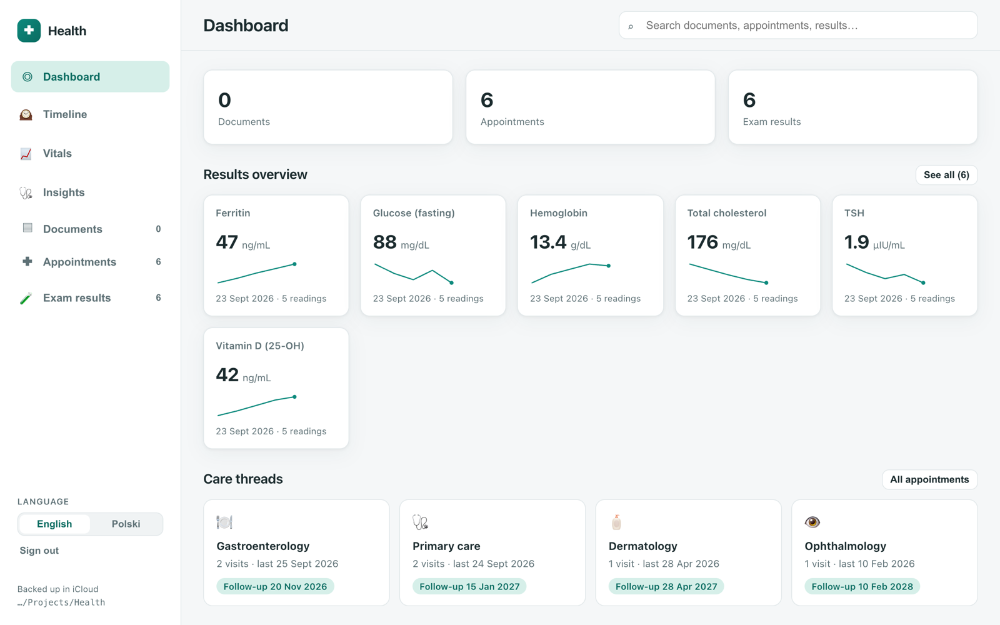
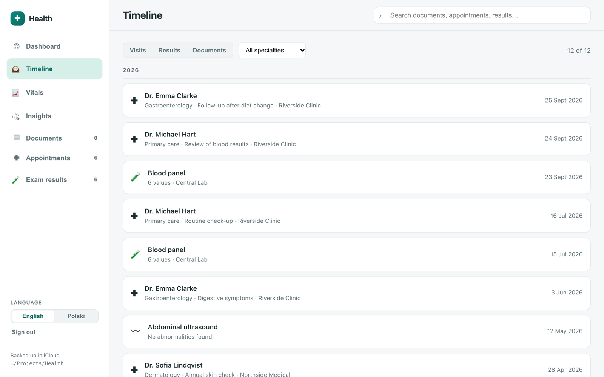
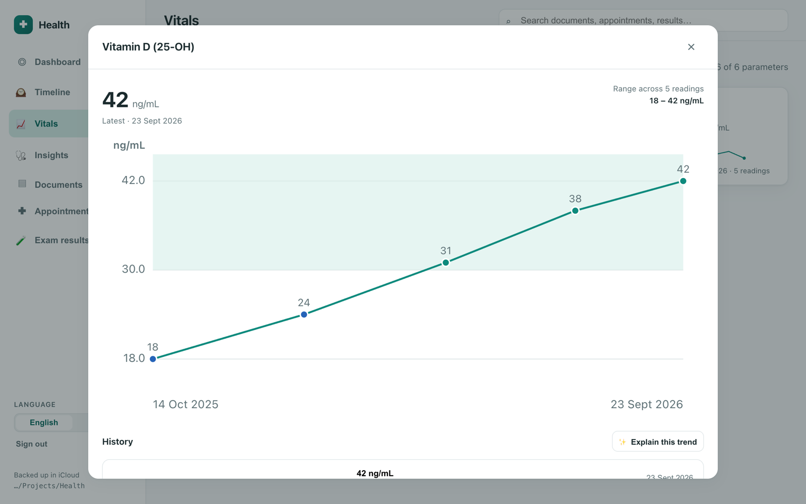

Health
I see doctors fairly often, and keeping my medical paperwork in order has always been a bit of a project. For years everything was on paper, in one big binder with a tab for each specialty. After a visit, the papers went behind the right tab. For a while, that worked well.
Then more and more doctors moved to online platforms. Recommendations and test results started arriving only online, so after each visit I would download them, print them and file them in the binder. I kept the PDFs in an iCloud folder too, so I could open them on any device. My own notes from visits lived somewhere else again: in a Google Doc, also split by specialty.
The real trouble started when I needed to find something older. Documents related to one question were often spread across several specialties, which meant going through tab after tab. Grouping by specialty, it turned out, isn't always the best way to look at your health.
So I built an app for it. Since most of the documents were already in iCloud, I decided the app would simply be an interface to those files. That way I didn't have to build a new service or figure out how to secure one. Everything stays in my iCloud, where I can open it even without the app.
How it works
The app keeps two kinds of files in that iCloud folder. The original documents are stored exactly as they came and are never modified. Next to them, the app writes small records, one for each document, visit and test result, with the details that matter: the date, doctor, category, the text extracted from the document and, for lab tests, every measured value. Searching runs over these records rather than through the PDFs themselves, which is why it's quick, and everything you see in the app, from the timeline to the charts, is built from them.
Creating those records is mostly automatic. The app runs locally on my MacBook, and so does the AI behind it. When I drop in a PDF, a local Ollama model reads it, suggests the date, doctor and category, and pulls lab values into a table shown next to the original document, so I can check every number before saving.

Visits are still grouped by specialty, like the tabs in my old binder, but that's no longer the only way to find things. Each visit keeps its recommendations, my notes and links to the related documents and results, so the Google Doc is gone too. One search box covers everything, including the text of the documents, and a timeline shows visits, results and documents in date order, with filters when I need them.

Lab results are where the app helps the most. I love keeping an eye on my vitals in Apple Health on my iPhone, and that's what inspired this part: every lab parameter gets its own tile with the latest value and a small trend line, and opens into a full chart across all tests, no matter which doctor ordered them. Recommendations like “repeat bloodwork in 3 months” become small to-dos with a due date, instead of a line buried in a PDF.

There is also an optional analysis of results. It can use the local Ollama model as well, or Claude, in which case only de-identified values are sent, and the app shows exactly what will go out before asking for consent.
Screenshots show made-up demo data.